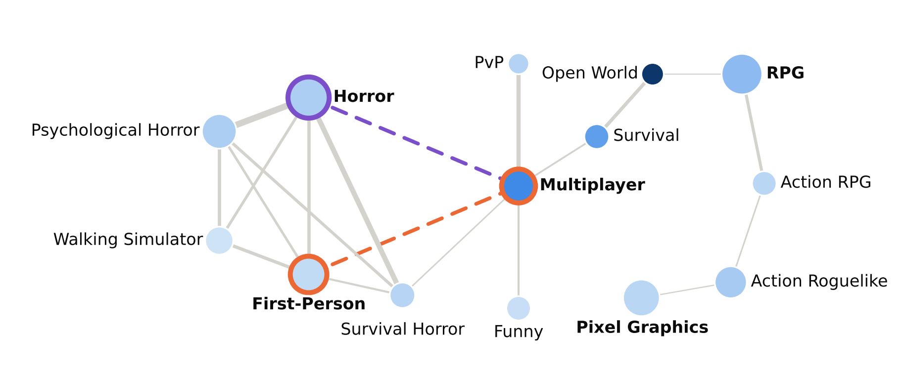

Steam is the largest PC game store. Players vote tags onto each game; the top tags drive store search.
An indie studio's creative director chooses the two tags for the next game. If no pair passed the selection rule (section 5), they would take a proven but crowded pair such as Building × Simulation.
Counts can't show whether two tags attract different players. The network can: tags with few shared neighbours point to audiences that rarely meet, which one game may reach together.
| Source | S1 = FronkonGames dataset (Hugging Face); S2 = live Steam store + reviews. |
| Obtained | S1 download (Sep 2025 snapshot). S2: 1,000 random S1 games (random seed 7202), scraped 2026-10-14. |
| Legal | S1 MIT licence. S2: robots.txt allows /app/, /appreviews/; 1 req/1.5 s. No personal data. |
| Period | Released Jan 2023 – Dec 2024. |
| Volume | S1: all 9,094 Indie games with ≥10 reviews. S2: 996 with a live page. |
| Check | S1 vs S2: mean top-5 tag Jaccard 0.87; Spearman ρ of reviews 0.98. |
| Bias | Favours games that sold; reviews count buyers, not unmet demand; late-2024 games had less time. |
| Node | A Steam tag. Undirected, weighted tag–tag projection of the game–tag bipartite graph. |
| Edge | Co-occurrence in a game's top 5 tags; suggests relatedness, not a stated relation. |
| Resolution | Co-op, Online/Local Co-Op, Local Multiplayer merged into Multiplayer: 84% of Horror × Multiplayer games were also co-op, so splitting them hid crowding. |
| Weight | NPMI: co-occurrence vs chance, −1 to 1 (0 = chance). By raw count, 9 of the top-10 edges touch the 5 commonest tags; by NPMI, 0. |
| Window | Top 5, as shown on the store page. With all 20, the pair covers 375 games (mostly minor tags) and its reviews drop from 5.1× to 3.0×. |
| Excluded | “Indie” (genre filtered on); release-model, adult tags; >25% of games: Singleplayer, Adventure, Action, Casual, 2D, 3D, Atmospheric, Exploration. |
| Pruning | Tag on ≥1.5% of games (136); edge: NPMI ≥ 0.10, ≥0.5% shared (45). 439 tags → 80 nodes, 177 edges. |

Selection rule: among pairs on ≥73 games (0.8%), keep those not crowded (games ≤ 1.5× chance, where chance = games with A × games with B ÷ 9,094) whose tags sit in separate neighbourhoods (≤20% shared neighbours); pick the one whose median reviews are highest relative to the median game (40).
| Pair | Games (chance) | Crowding | Shared neighbours | NPMI | Median reviews |
|---|---|---|---|---|---|
| Pick: First-Person × Multiplayer | 78 (71) | 1.10× | 8% | 0.02 | 204 (5.1×) |
| Plan B: Horror × Multiplayer | 114 (93) | 1.23× | 8% | 0.05 | 117 (2.9×) |
| Crowded: Building × Simulation | 74 (29) | 2.54× | 8% | 0.19 | 136 (3.4×) |
"Not crowded" is against chance, not the 2023–24 co-op horror boom. If 2025 releases push it past 1.5×, I switch to the #3 pair, Pixel Graphics × RPG.